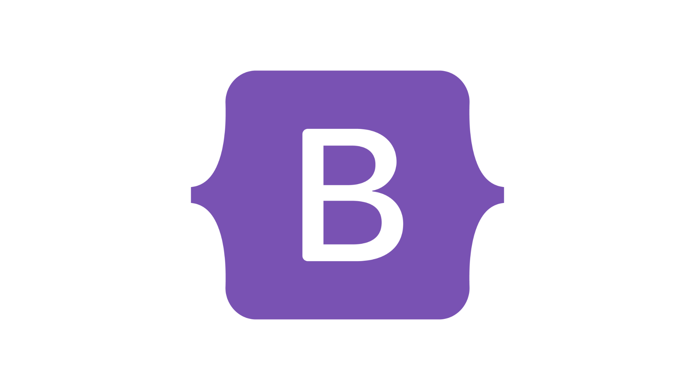

Finans é uma landing page desenvolvida como parte de um exercício prático durante cursos online, com o objetivo de aprendizado. A página apresenta de forma clara os principais recursos da plataforma de finanças pessoais, como a possibilidade de cadastrar-se para organizar e gerenciar despesas. Embora a parte logada, com gráficos e recursos avançados, ainda não tenha sido desenvolvida, a landing page serve como uma introdução visual ao conceito da ferramenta. A estrutura foi construída utilizando HTML5, CSS, Bootstrap e Font Awesome, proporcionando um design moderno, responsivo e funcional, otimizado para uma experiência agradável em diferentes dispositivos.
Habilidades

Construção de estruturas semânticas, responsivas e otimizadas para SEO.

Estilos avançados e layouts responsivos utilizando Flexbox, Grid e Bootstrap.
Interatividade e animações dinâmicas com foco em UX e integração com APIs.
